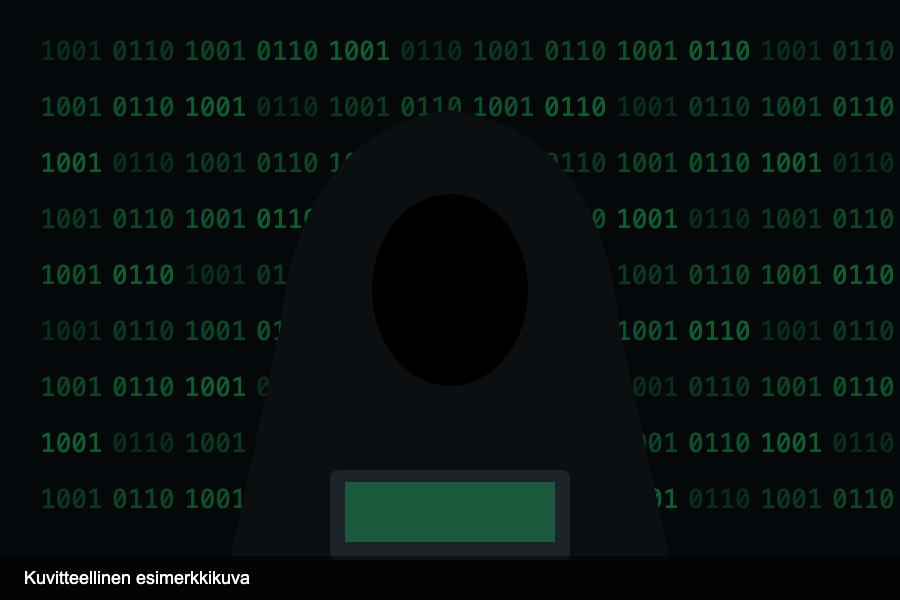
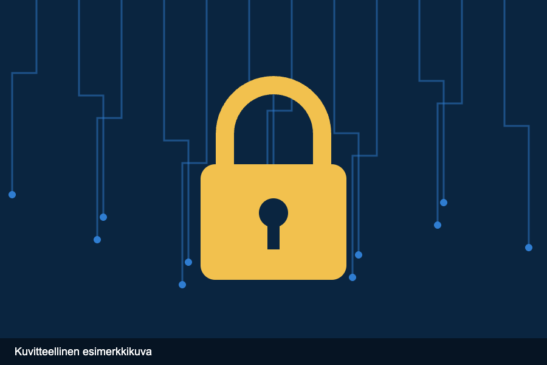
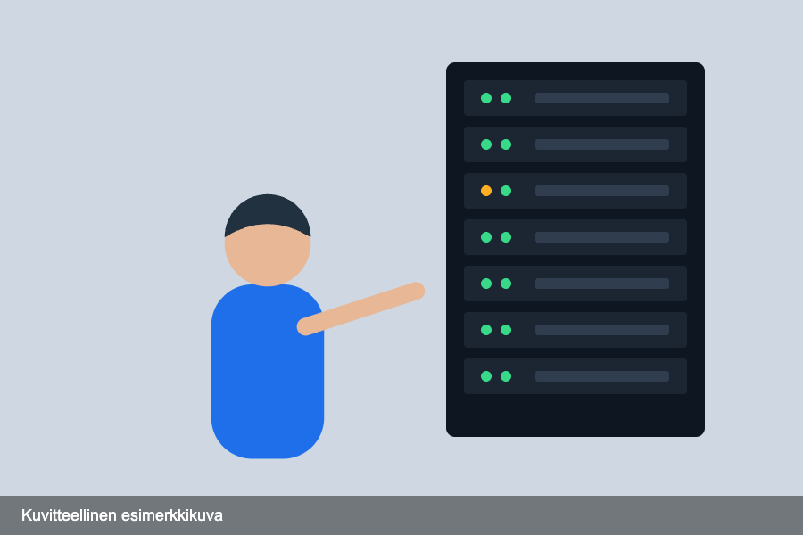
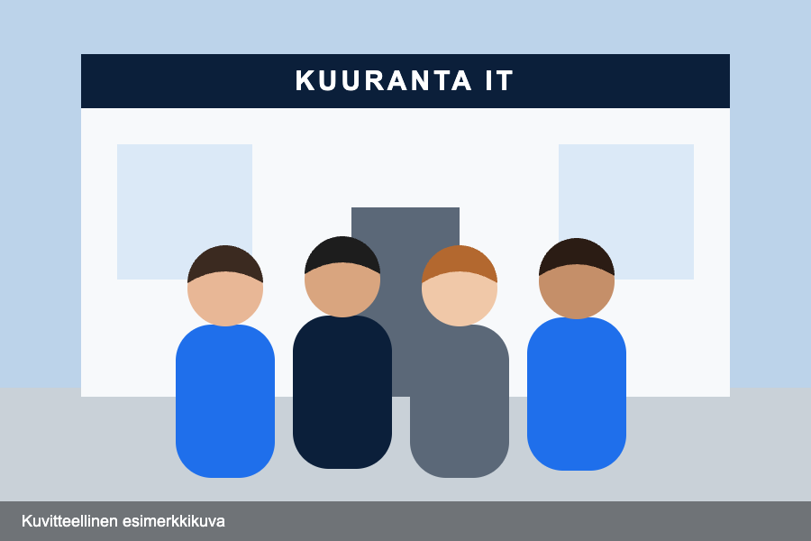
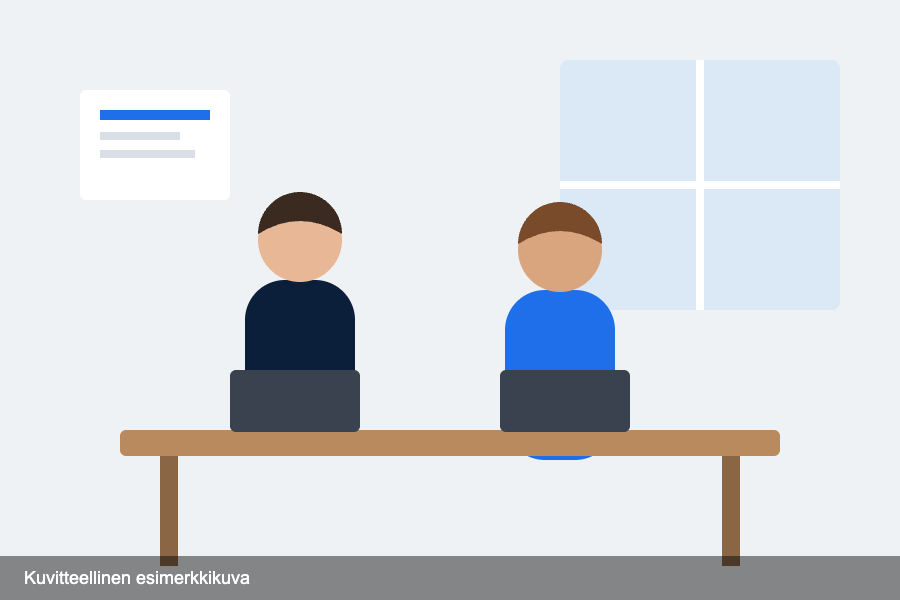
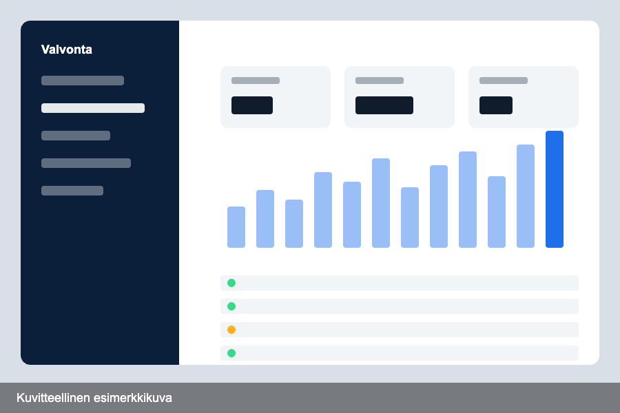

Brändi ja ääni · kuvat
Mitkä näistä kuvista ovat teidän näköisiänne?
Vastatkaa numeroilla kolmena listana: hyvät, ei käytetä ja en osaa sanoa. Perusteluja ei tarvita. Kuvasääntö kirjoitetaan valinnoistanne.
Esimerkki vastauksestaHyvät: 2, 5, 6. Ei käytetä: 1, 4. En osaa sanoa: 3.

1
Huppupäinen hahmo ja koodiakuvapankkikuva. Omasta kansiosta

2
Riippulukko piirilevyn päälläkuvapankkikuva. Omasta kansiosta

3
Työntekijä palvelinkaapin äärelläoma kuva. Omasta kansiosta

4
Koko tiimi toimiston edessäoma kuva. Omasta kansiosta

5
Kaksi työntekijää toimistollaoma kuva. Omasta kansiosta. 2 lähes samanlaista versiota

6
Kuvakaappaus valvontanäkymästäkuvakaappaus. Omasta kansiosta